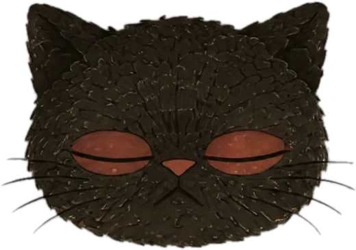

京城野錄 號外
양이를 찾습니다
까만 고양이 한 마리. 식자실에서 활자
「ㄱ」
을 물고 감. 그래서 이 호외의 ㄱ 자리는 전부 빈칸이오. · 현상금 멸치 한 줌 · 경성야록 편집국
尋
猫
← 산책길로

심묘를 누르시오
사람들의 눈 · 실제 자료
귀
코
사람들의 눈으로 ↩
컬러: 심묘의 눈 · 바닥 높이, 파랑·노랑 위주로 보는 고양이 색 · 재현 그림
이 골목을 떠나면 「심묘 연재만화」 한 칸이 찍히고, 다시 산책길로 돌아가오.
이 골목을 떠나기 · 산책길로 →